Géomatique
Acquisition, traitement, analyse et valorisation de vos données géographiques. Cartographie, indicateurs décisionnels et restitutions claires, pensées pour être lues et réutilisées par vos équipes.
Trois expertises au service de vos projets : la géomatique pour valoriser vos données, l'expertise risques pour diagnostiquer la vulnérabilité de vos biens et appliquer la réglementation, et la formation pour rendre vos équipes autonomes.
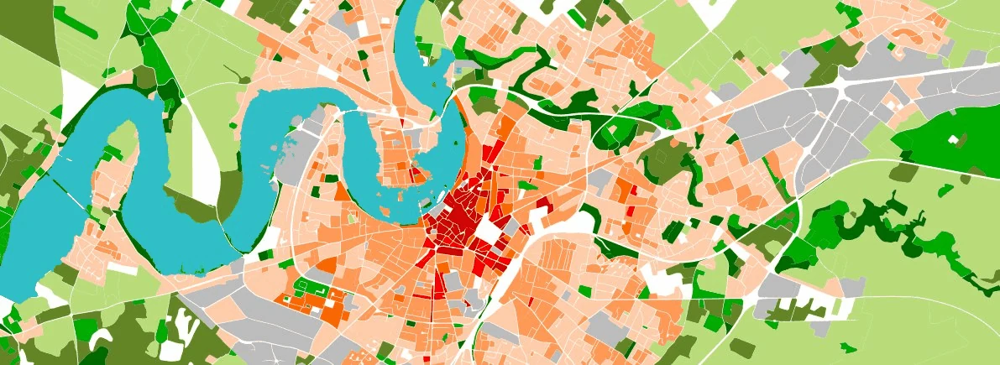
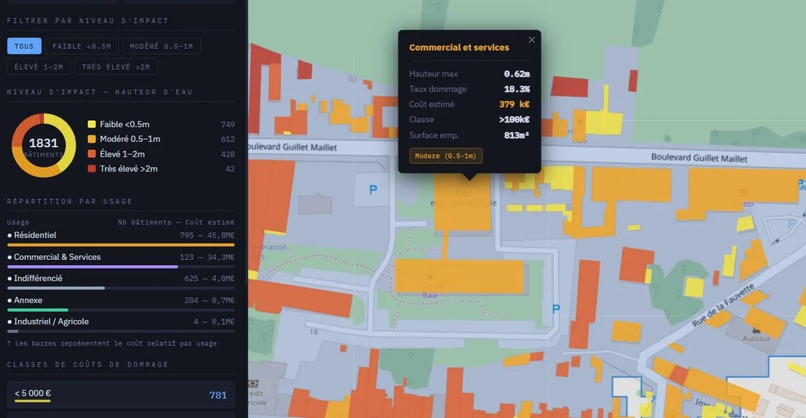
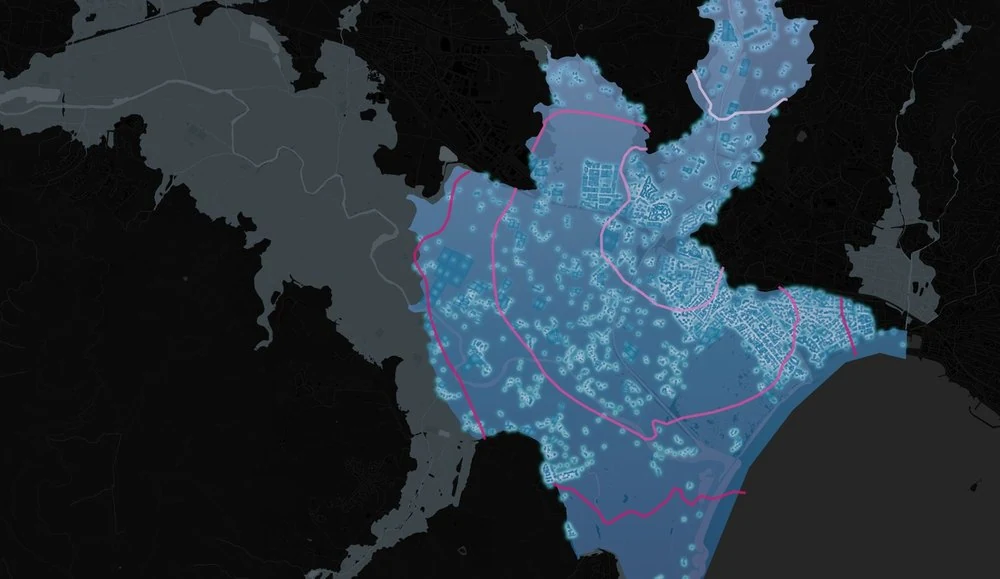
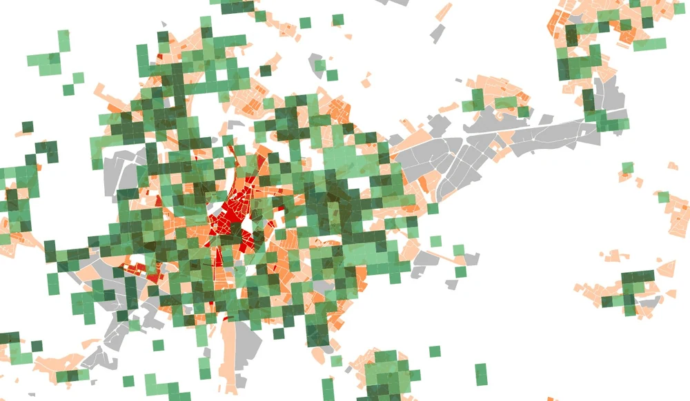
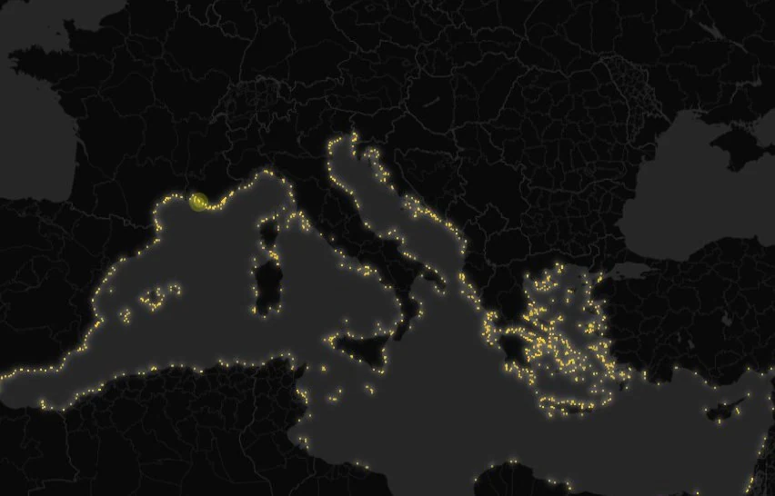
Référentiels mobilisés dans nos travaux récents
Vous avez une idée qui mobiliserait des données géospatiales, ou une question qui demande une connaissance fine des risques ? Nous intervenons sur quatre volets complémentaires.
Acquisition, traitement, analyse et valorisation de vos données géographiques. Cartographie, indicateurs décisionnels et restitutions claires, pensées pour être lues et réutilisées par vos équipes.
Évaluation de la vulnérabilité des territoires et des enjeux face aux risques naturels et technologiques : cartographie d'aléas, exposition des enjeux, aide à la décision en prévention et en gestion de crise.
Montée en compétences de vos équipes sur les outils SIG et la donnée géographique. Ateliers, formations sur mesure et accompagnement pour gagner en autonomie sur vos propres jeux de données.
Au-delà de la cartographie, nous vous aidons à appliquer les obligations réglementaires et à mesurer concrètement la vulnérabilité de vos biens et de vos activités.
Des diagnostics adaptés à chaque échelle, du bâtiment au bassin versant :
Webmaps, tableaux de bord et plugins : chaque outil est documenté et publié pour que vos équipes puissent le reprendre.
Le PPRi de Quint-Fonsegrives (Haute-Garonne) traduit bâtiment par bâtiment : zone réglementaire, zone refuge, diagnostic de vulnérabilité, règles de travaux et éligibilité au Fonds Barnier. Trois parcours : habitants, élus, services techniques.
ConcernésDDT de la Haute-Garonne · IGN · CSTB / ADEME
Ouvrir la webmap →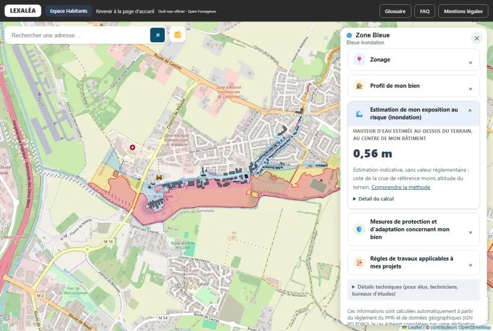
Chaleur, sécheresse, feux de forêt et pluies extrêmes : quels départements et quelles intercommunalités de l'Hexagone seront les plus exposés à +2,7 °C (2050) et +4 °C (2100) ? Deux modes de lecture, basculement par rapport à 1976-2005 ou classement entre territoires.
ConcernésMétéo-France (DRIAS) · IGN
Ouvrir la webmap →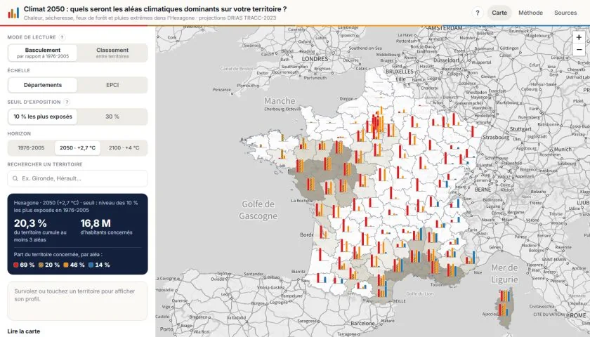
Évaluation des dommages aux bâtiments lors de l'inondation de la Charente en février 2026, avec filtres par niveau d'impact et par usage.
ConcernésMEDD / DGPR
Ouvrir l'outil →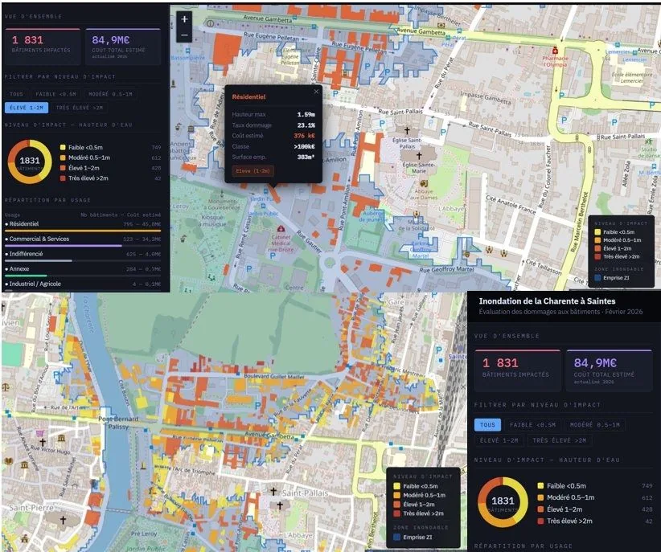
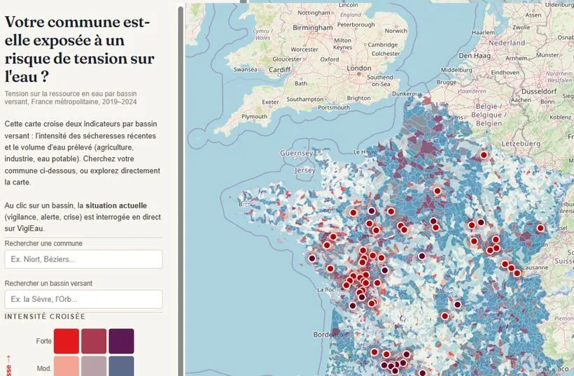
Webmap · Ressource en eauSécheresses récentes (2019-2024) et volumes d'eau prélevés par bassin versant, avec la situation VigiEau en direct.
Ouvrir la webmap →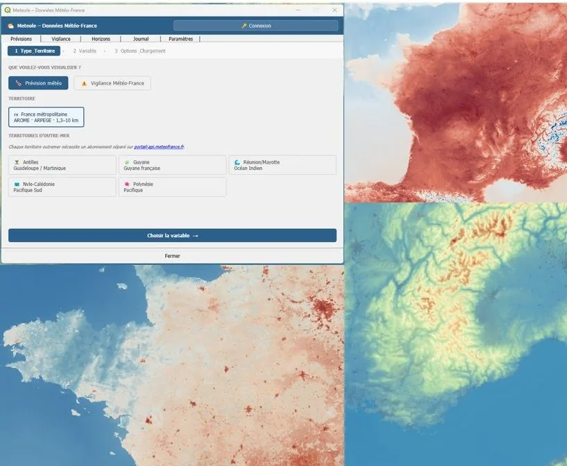
Plugin QGISLes données Météo-France (AROME, ARPEGE) dans QGIS, adossées à la librairie Python Méteole de la MAIF.
Voir le dépôt GitHub →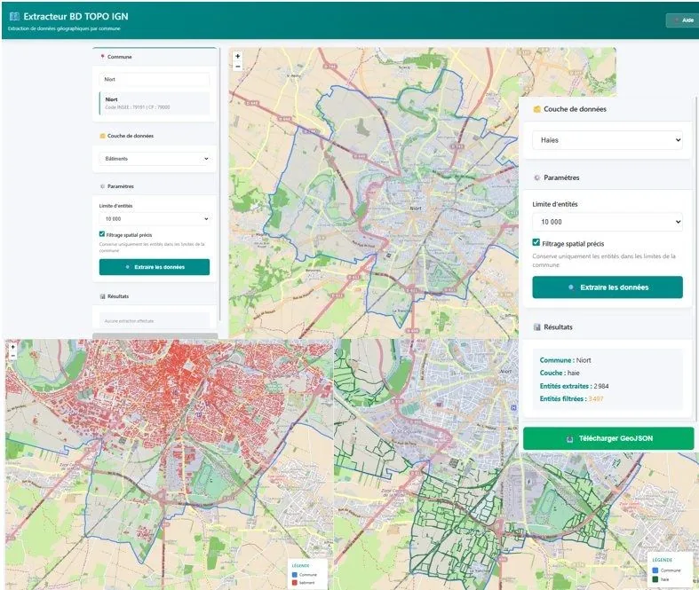
Outil web · WFSExtraction par commune depuis la BD TOPO via WFS : choix de couche, filtrage spatial, export GeoJSON.
Ouvrir l'outil →J'ai créé Géopi après plus de neuf années passées dans un centre d'expertise en prévention des risques, comme chargé de projets. Mon ambition : mettre la donnée géospatiale au service des acteurs engagés sur le terrain de l'atténuation des risques (collectivités, associations, services de secours, assureurs, entreprises).
Je construis mes analyses sur des méthodes documentées et des données sourcées, et je livre des résultats que vos équipes peuvent s'approprier et faire évoluer sans dépendance.
Je privilégie les outils libres et les données ouvertes, parce que c'est la voie la plus robuste, économique et durable pour construire une connaissance partagée. Et parce que transmettre vaut autant que produire, je fais de votre autonomie un objectif à part entière.
Les acteurs engagés dans l'atténuation des risques : collectivités, associations, services de secours, assureurs et entreprises.
Principalement des outils libres (QGIS, Python, webmaps) et des données ouvertes. Vous gardez la main sur les traitements et pouvez les reprendre sans licence ni dépendance.
Selon le besoin : études, rapports d'audit avec préconisations, cartes, indicateurs, tableaux de bord, webmaps ou plugins, toujours accompagnés des données et de la méthode documentée.
Oui, à plusieurs échelles : bâtiment, site d'activité ou exploitation agricole, commune ou intercommunalité, bassin versant, pour des usages résidentiels, économiques, industriels ou agricoles.
Oui : ateliers, formations sur mesure et accompagnement pour que vos équipes gagnent en autonomie sur leurs propres jeux de données.
Géopi est basé à Chauray (Deux-Sèvres). Nos réalisations couvrent des territoires de toute la France métropolitaine.
Écrivez-nous via le formulaire ou appelez directement. Nous répondons sous 48 h pour convenir d'un premier échange.
Oui : lecture du zonage et du règlement d'un PPR, identification des obligations pour vos bâtiments et vos projets, et préparation d'un plan de continuité d'activité face aux risques.
Écrivez-nous via le formulaire, ou appelez directement pour convenir d'un rendez-vous.
06 32 32 78 13 Réponse sous 48 h PDF Plaquette de présentation7 pages · 0,7 Mo